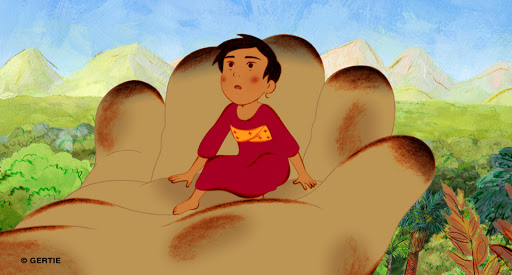

I first got exposed to the French-Italian animated film "Mia and the Migoo" on the Canadian DVD release of "The Secret of Kells," which included a subtitled teaser trailer for it. I can't find that original teaser online, but it was a striking one: it shows a young tan girl at the grave of her mother under a single tree in a barren landscape, before confidently exclaiming to three guardians (who appear to be three old women with tall farming hats) that she'll leave her village to find her father, setting out on foot into the great unknown. That, as well as the colored-pencil visual aesthetic, and the mysterious title, sold me in an instant. ... however, despite having released in 2008, a release in North America didn't come about for a few more years. Lead by GKIDS (the same distributor behind "The Secret of Kells"), a DVD and Bluray was announced... with the mysterious creature known as the Migoo front and center on the cover, with promotional art that removed the compelling mystery and looked as generic as a children's film could be. And then that Bluray was canceled for reasons unknown, presumably due to a realized lack of interest. Said DVD came exclusively in an "eco-friendly" DVD case, English dub audio only, again catering to American families opposed to foreign film fans. And the initial minutes show two story threads that eventually connect: Mia's journey, and the events of a corporate mining and deforestation company responsible for pollution. As relevant as the subject matter is, nothing dates the "timelessness" of a story more than the antagonist being a business fat-cat in a suit. These were all bad signs.Ultimately, those last-minute concerns were minor. "Mia and the Migoo" might have made concessions to be a modern family film, but is still intentive and enjoyable.Set in an unspecified modern period in an unspecified part of Latin America, Mia's father works for a large company to build a resort, far away in a remote area, to sustain his family. The area is said to be dangerous, due to a curse, or possibly, a mythical creature... the first scene shows the father potentially stuck in an accident. After the disruption, the large and loud corporate leader travels to the site to investigate, and is forced to take his son along, a boy with greater respect for the environment than he has. Meanwhile, Mia's mother passes away for unknown reasons, and armed with her lucky charms, she sets out alone to be with her father, out of her remote village and towards the desolete, and supposedly dangerous, horizon.Mia's early scenes are perfect. She's plunky, brave and confident, and meets a handful of colorful characters that help her as she travels. The adventure is both forebodding and full of whimsy, not unlike the works of Aardman or Slyvian Chomet. Because the setting is remote and exotic, it feels mysterious and timeless in the most ideal way, and great fun for both children and adults.  Unfortunately, Mia's scenes alone barely make half a feature film, and the extra content featuring the loud business man is far less interesting. Or rather, the characters are less interesting: the scenes are still important to create a sense of urgency regarding Mia's father (after the accident, the movie leaves us in suspense regarding his well-being), and for introducing the large actions and footsteps of the Migoo, a mythical giant race of creature that protects the environment. In practice, the build-up towards the Migoo is well paced and satisfying. These scenes are fun at times, with the major flaw being how overbearing its message is. But I also couldn't help but think the addition of the antagonist was a last-minute addition to pad out the story. Of course, both sides of the story collide when the Migoo finally reveals itsself in the second half of the movie. The Migoo itself is a fun creature, large and lumbering, but cute, peaceful and innocent (even though the design of it feels like a leftover from Sesame Street)... and somehow able to speak basic English sentences in the voice of Wallace Shawn, the guy best known for yelling "inconceivalbe!" in "The Princess Bride." At this point, the story also starts to grow less interesting, focusing on saving a sacred tree. Environmentalism is definitely the theme of the movie, and it's not as subtle as it could have been. But man, that first half was good fun.Visually, the movie looks beautiful, owning that colored-pencil motif in both color and texture, which looks even better in animation. Human characters in particular have distinct and expressive faces. Brief use of 3D CGI is a minor annoyance (and again, this only occurs with the business-man's storyline, primarily with the helicopter he flies in). The English dub has a surprising voice cast of A-list actors, and their performance is fine enough, although I'd feel much prefer to hear the French dub one day. Despite some uneven pacing and an overbearing theme (albiet important one) to save the planet, "Mia and the Migoo" is an above-average children's film that the whole family can enjoy. It's clever and funny, imaginative and wonderous.
- "Ani" More reviews can be found at : https://2danicritic.github.io/ Previous review: review_MFKZ Next review: review_Millennium_Actress